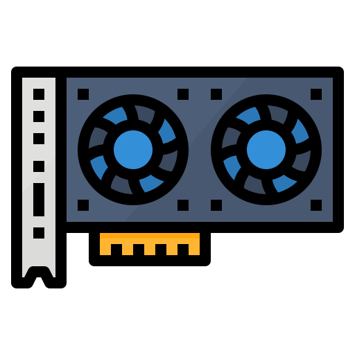
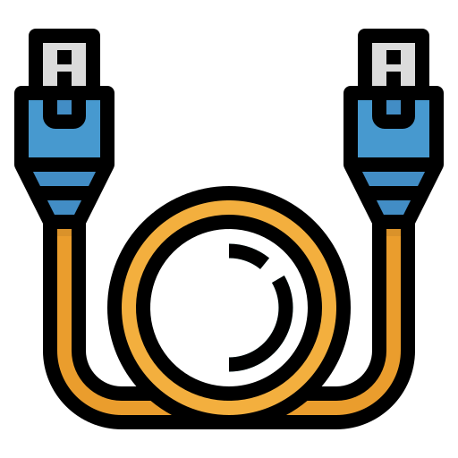

|
|
|
|
|---|
Un Subsistema informático es un sistema que es parte de otro sistema mayor (suprasistema o supersistema). En otras palabras, un subsistema es un conjunto de elementos interrelacionados que, en sí mismo, es un sistema, pero a la vez es parte de un sistema superior.
|  |

|
 |
|---|---|---|
Hardware |
Software |
Redes |
El hardware es la parte física de una computadora, es decir, todo aquello que puede ser tocado. Esto incluye el teclado, las tarjetas de red, el ratón o mouse, el disco de DVD, el disco duro, las impresoras, etc. |
El software es el conjunto de instrucciones que una computadora debe seguir, es decir, todas aquellas indicaciones sobre lo que tiene que hacer y cómo. El concepto de software engloba todo aquello que es intangible en la computadora, lo que no se puede tocar, como, por ejemplo, los programas y los sistemas operativos. |
La red informática nombra al conjunto de computadoras y otros equipos interconectados, que comparten información, recursos y servicios. |